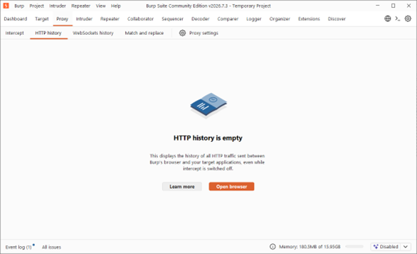
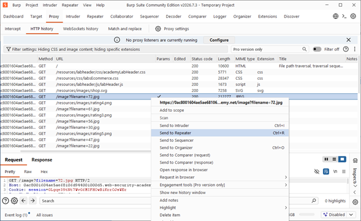
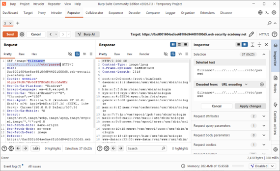
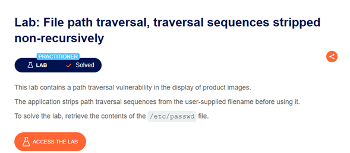

Ficha Técnica
Actividad 09: Lab: File path traversal, traversal sequences stripped non-recursively
Laboratorio centrado en la evasión de filtros de sanitización (Bypass) mediante secuencias anidadas, explotando la falta de limpieza recursiva en el servidor web.
Dificultad: Practitioner
Vulnerabilidad: CWE-22 (Improper Limitation of a Pathname to a Restricted Directory)
La aplicación detecta y elimina (strip) secuencias de ../. El objetivo es estructurar un payload anidado para evadir el filtro no recursivo y extraer el archivo /etc/passwd.
Marco Teórico
Fundamentación de la Vulnerabilidad
En esta variante específica (A01:2021 - Broken Access Control), la aplicación intenta defenderse implementando una función de reemplazo de cadenas (Blacklisting). Cuando los desarrolladores utilizan mecanismos simples para eliminar secuencias maliciosas, a menudo olvidan que el procesamiento ocurre en una única pasada (no recursiva).
Si un atacante envía la secuencia anidada: ....//, el servidor identifica el patrón central ../ y lo elimina. Las piezas restantes (.. de la izquierda y / de la derecha) se concatenan automáticamente, reconstruyendo la secuencia original ../ que luego se pasa al sistema operativo.
Procedimiento
Fase 1: Inicialización y Entorno de Auditoría
Se ingresó al portal de Web Security Academy en la sección del laboratorio "Traversal sequences stripped non-recursively". Se configuró el entorno de auditoría iniciando el navegador integrado de Burp Suite desde la pestaña Proxy > HTTP history.

>_ Evidencia 02: Ventana principal de Burp Suite con el historial HTTP listo para iniciar la recolección de tráfico web.
Fase 2: Identificación del Endpoint Vulnerable
Se examina el flujo de solicitudes. Se identifica que la aplicación carga imágenes haciendo uso del endpoint vulnerable en la solicitud GET /image?filename=72.jpg. Se envía a Repeater (Ctrl+R).

>_ Evidencia 04: Historial de Burp Suite mostrando la identificación de la solicitud GET vulnerable y su derivación al entorno Repeater.
Fase 3: Evasión (Bypass) y Exfiltración
Para evadir la restricción no recursiva, se diseña un payload anidado modificando el parámetro a filename=....//....//....//etc/passwd. El filtro del servidor actúa eliminando los ../ internos, reconstruyendo accidentalmente la secuencia de escape legítima y devolviendo un HTTP/2 200 OK con el fichero de Linux.

>_ Evidencia 06: Ataque exitoso en Repeater. A la izquierda, se observa el payload anidado evadiendo el filtro. A la derecha, el listado de usuarios de Linux.
Fase 4: Verificación de Compromiso
Se recarga la ventana principal del navegador. La plataforma valida la exfiltración exitosa del archivo mediante la mecánica de Bypass anidado y actualiza el encabezado del sitio.

>_ Evidencia 07: Confirmación visual del estado "Lab Solved" en color verde, validando la resolución técnica del reto.
Análisis Téc.
Mecánica del Payload de Evasión
GET /image?filename=....//....//....//etc/passwd HTTP/2
Host: 0ac8001604ae5ae6...web-security-academy.net
Accept: image/webp, image/apng, image/*
Sec-Fetch-Site: same-originDefensa en Profundidad y Remediación
Intentar "limpiar" los datos eliminando secuencias conocidas (../, ..\) es una práctica insegura. Se debe optar siempre por esquemas de "Listas Blancas" (Allowlisting) estandarizadas, donde la entrada solo se acepta si coincide estrictamente con un formato cerrado (ej. ^[a-zA-Z0-9_-]+\.(jpg|png)$).
El servidor debe utilizar APIs del lenguaje que resuelvan la ruta absoluta real del fichero (canonicalización) antes de proceder a abrirlo. Lenguajes como Java disponen de File.getCanonicalPath() o PHP de realpath().
El sistema debe asignar identificadores únicos a cada recurso almacenado en la base de datos (ej. ?id=105). Cuando se recibe una solicitud, el servidor mapea de forma segura el ID al recurso local, aislando completamente las APIs de IO del control del usuario.